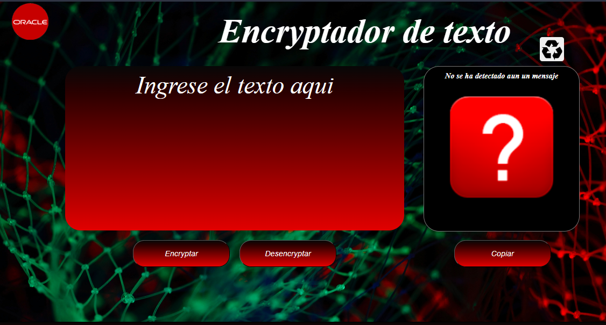
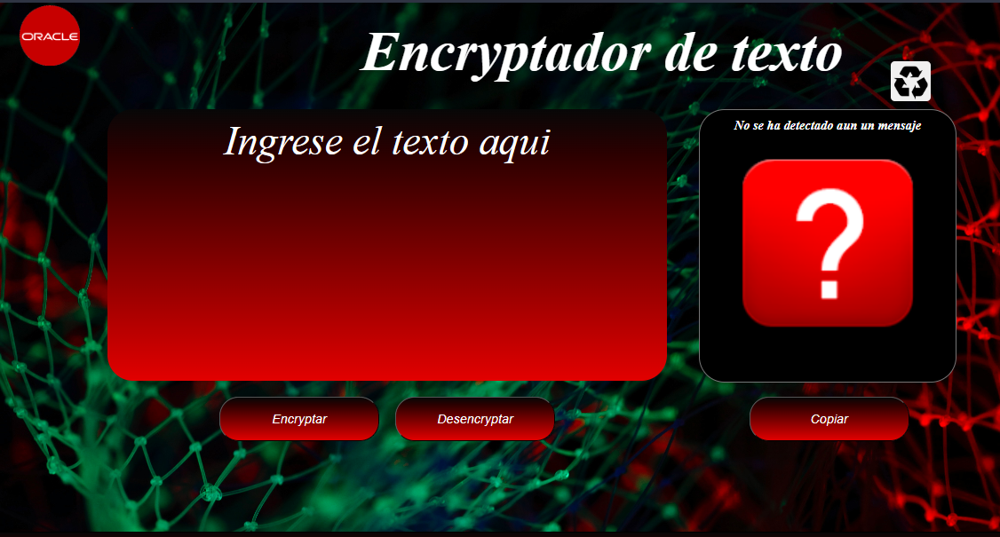
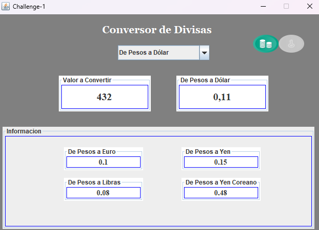
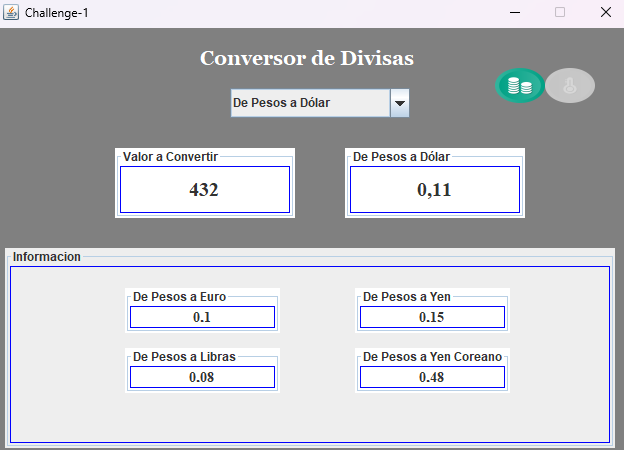
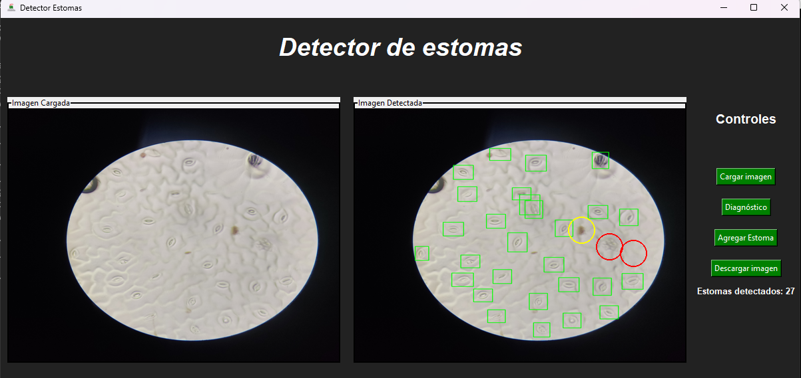
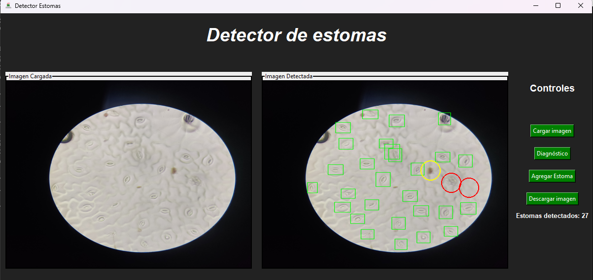
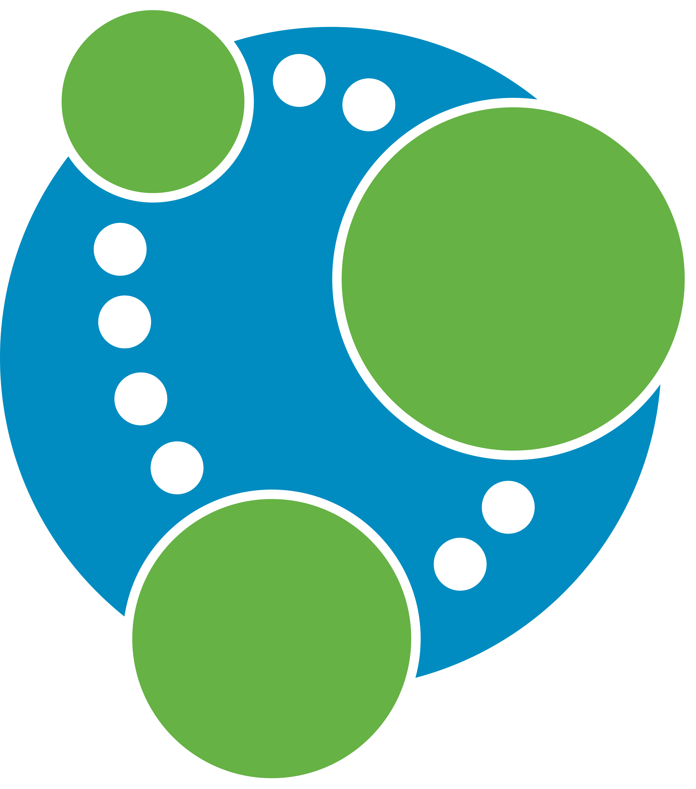

Yeison Stiven Valencia Hurtatis
 GitHub
GitHub Discord
Discord Linkedln
Linkedln¡Saludos! Mi nombre es Yeison Stiven Valencia Hurtatis y tengo 25 años. Me enorgullece contar con una formación en Ingeniería de Sistemas obtenida en la Universidad de la Amazonia, situada en Florencia, Caquetá. Mi pasión y enfoque profesional están orientados hacia el apasionante mundo del desarrollo backend y la gestión de bases de datos.
Desde el ámbito del desarrollo, he encontrado mi hogar en Java, explorando su potencial para crear soluciones backend sólidas y eficientes. Además, me fascina el diseño y la administración de bases de datos, en especial con tecnologías como MySQL, PostgreSQL y Oracle. Crear estructuras de datos que sean eficaces y seguras es una de mis metas constantes.
Mi viaje profesional no se detiene ahí. Mi curiosidad y deseo de crecimiento me han llevado a sumergirme en el mundo de la inteligencia de negocios. Conozco a fondo la herramienta Power BI, lo que me permite convertir datos en insights valiosos para la toma de decisiones informadas. También he explorado el análisis de datos utilizando Python como mi lenguaje de programación preferido, permitiéndome extraer conocimiento a partir de los datos y transformarlo en acciones concretas.
Proyectos
 Encriptador de texto

Encriptador de texto

Encriptador de texto desarrollado en el lenguaje de programacion Js, el cual tiene la funcionalidad de encriptar una cadena de texto unicamente en minuscula, como de tambien de volver a la normalidad una cadena de texto encriptada.
 Conversor Moneda/Temperatura

Conversor Moneda/Temperatura

Aplicacion desarrollada en el lenguaje de programacion java en conjunto con su entorno awt, el cual permite realizar la conversion de peso colombiano a cualquier tipo de cambio y de realizar la conversion de temperatura a cualquier nomenclatura.
 Detector de estomas

Detector de estomas

App desarrollada en python la cual cuanta con la funcionalidad de ralizar una deteccion estomatica con una precision sobre el 90%
Habilidades
Backend
-
 C#
C#
-
Java
-
Python
-
JavaScript
Frontend
-
 Html
Html
-
 Css
Css
Complementos
-
 Power BI
Power BI
-
 R
R
Bases de Datos
-
 MySQL
MySQL
-
 MariaDB
MariaDB
-
 PostgreSQL
PostgreSQL
-
 Oracle
Oracle
-  Neo4j